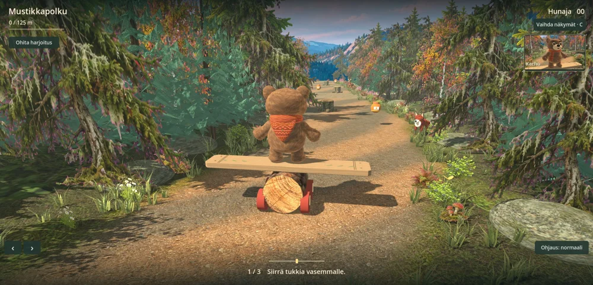

Ready, Bear?
Try a trail, or pick number seven to jump onto a log and ride the rapids.
Play Wobble Bear Ride the rapids
Try a trail, or pick number seven to jump onto a log and ride the rapids.
Play Wobble Bear Ride the rapidsFor a different forest, try Forest Friends. All seven trails are here too.
Play Forest FriendsWobble Bear · 0.19